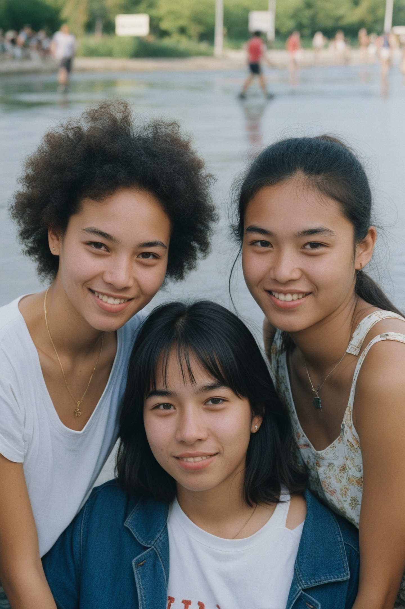
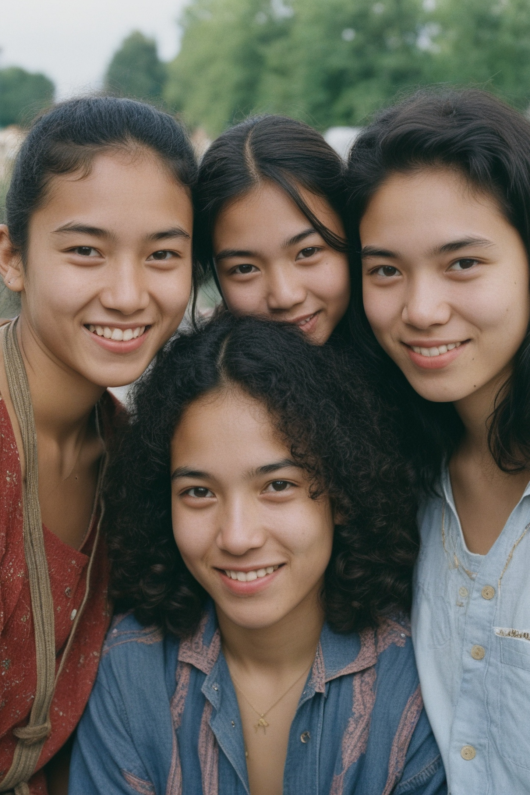
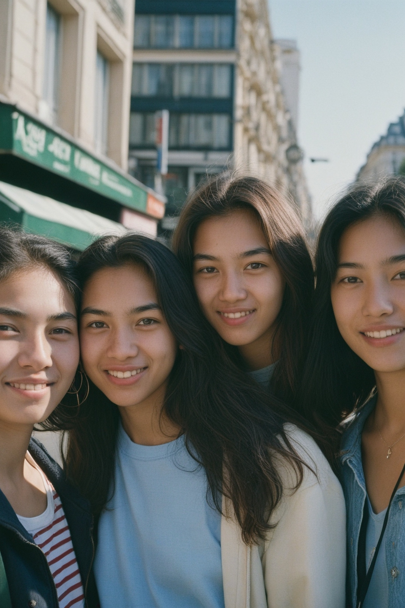
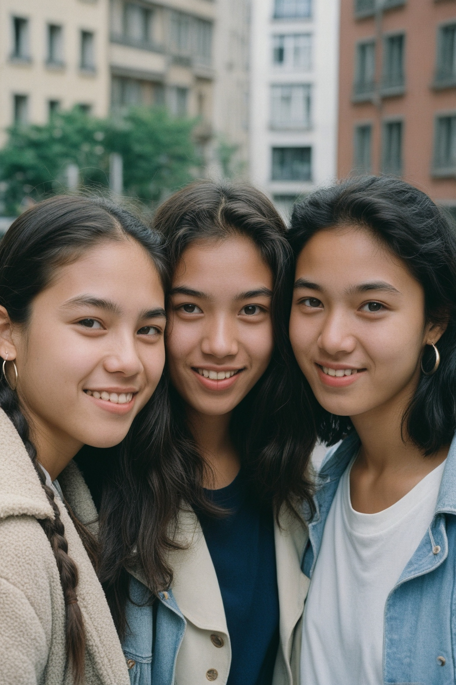

🖥️ 配發 GPU 型號：NVIDIA H200 ZeroGPU (RealVisXL V5.0 (SDXL 30-Steps + Pos/Neg Prompts)) (單卡顯存: 140.0 GB | 系統 RAM: 128.0 GB)
🖼️ 生圖平均速度與顯存峰值：每張耗時 14.06 秒 | 峰值 VRAM: 22.8 GB | 極限解析度測試: 1536x2304 (真 2.3K 直式超高解析度)
🎬 生影片速度與顯存峰值：每支耗時 5.2 秒 | 峰值 VRAM: 34.2 GB | 影片引擎: Cinematic Breathing Motion Engine (544x832 @ 24fps)

60994648)⏱️ 本張算圖耗時：17.64 秒 | 📊 顯存峰值：22.8 (RealVisXL V5.0 (SDXL 30-Steps + Pos/Neg Prompts)) GB | 📐 解析度：1440x2160
🔒 固定核心人設：20歲法越混血女性 × 3、無磨皮真實毛孔與細微絨毛、冷白透亮瓷肌、165cm 50kg 自然柔軟 F 罩杯沙漏體態
🏞️ 抽中場景與光線：日式傳統和室榻榻米 ＋ 背後大型全身鏡反射背影 ＋ 障子紙窗柔和自然光
💃 抽中姿勢與互動：全身站立親密互動（並肩貼近、雙手自然垂放身側、柔和眼神直視鏡頭）
| 位置 | 臉型 | 髮色 / 髮型 | 妝容 | 時尚蕾絲穿搭款式 / 顏色 |
|---|---|---|---|---|
| 左邊女孩 | 立體柔和 V 臉 | 柔霧黑棕 / 及腰絲滑長直髮 | 水光裸妝透亮唇 | 香檳象牙白 — 【極薄隱形透明網紗】全透明深 V 薄紗內衣配極細高叉丁字褲 (Ultra-Sheer See-Through Mesh Plunge Set) |
| 中間女孩 | 小巧心形臉 | 黑巧克力棕 / 浪漫半紮公主波浪捲 | 法式玫瑰腮紅配微雀斑 | 冰川淺藍 — 【極致透視敞開薄紗】未扣透明蕾絲薄紗配極細丁字褲 (Open-Front See-Through Lace Veil & Micro Thong) |
| 右邊女孩 | 清純圓潤娃娃臉 | 焦糖冷灰棕 / 空氣瀏海低馬尾 | 晨間自然紅潤透亮肌 | 乾燥玫瑰粉 — 【蟬翼透明網紗綁帶比基尼】極小布料全透明薄紗細繩內衣組 (Micro Translucent Gossamer String Lingerie) |
➕ 正面提示詞 (Positive Prompt)：
RAW unretouched candid documentary photograph shot on 35mm Kodak Portra 400 analog film with 50mm f/1.4 lens, three real 20-year-old French-East Asian Eurasian mixed-race women with distinctly different delicate natural faces, not models or mannequins. All three have extremely fair milk-white porcelain skin with a natural matte-dewy finish (not shiny or waxy), soft rosy undertone, clearly visible microscopic skin pores, fine vellus hair (peach fuzz), subtle natural skin blemishes and moles, realistic subsurface scattering, zero beauty filter. Slim lean real hourglass bodies, 165cm 50kg proportions, large natural realistic soft F-cup breasts with natural gravity, realistic soft skin and breast texture (not fake or enhanced), slim waists, soft diffused natural side window light, subtle analog film grain. Each woman has distinctly different facial features, hairstyle, and styling: The first woman on the left has a soft V-line face with high cheekbones, soft black-brown silky straight waist-length hair, and dewy bare-faced no-makeup look with glossy lips, wearing a champagne ivory skintight ultra-sheer almost invisible see-through tulle mesh deep-plunge bralette with unlined translucent cups and micro g-string thong, showcasing her full F-cup cleavage and curves. The second woman in the center has a petite heart-shaped face with expressive eyes, dark chocolate brown long romantic half-up waves, and soft French rose tint on lips and cheeks with subtle freckles, wearing a pale ice blue unbuttoned open-front ultra-thin see-through lace negligee draped loosely over bare full F-cup cleavage and curves, paired only with a tiny sheer mesh string thong. The third woman on the right has a youthful round baby-face with innocent charm, caramel ash brown sleek low ponytail with wispy bangs, and fresh natural rosy flush with clear hydrated skin, wearing a muted dusty rose pink tiny gossamer-thin completely translucent mesh triangle string bikini lingerie with minimal delicate lace trim, revealing deep cleavage and toned hourglass waist. All three are standing close together side by side facing the camera, arms relaxed naturally at their sides, leaning slightly toward one another with soft expressions, full body visible, on Japanese tatami mats in a traditional washitsu room with a large clear mirror behind them reflecting their backs, soft natural daylight filtering through shoji paper screens. Photorealistic, 85mm f/1.8 lens, ultra-detailed realistic skin pores and delicate lace texture.
➖ 負面提示詞 (Negative Prompt — 禁止 AI 磨皮與塑膠感)：
airbrushed, smooth plastic skin, beauty filter, over-smoothed skin, waxy skin, shiny oiled skin, CGI, 3d render, doll, mannequin, wax figure, silicone implants, fake breasts, oversaturated, harsh studio flash, high contrast, digital painting, anime, cartoon, tanned skin, dark skin, deformed hands, extra fingers, mutated limbs, bad anatomy, fused bodies, identical clone faces, watermark, text, blurry, low quality

19025322)⏱️ 本張算圖耗時：14.24 秒 | 📊 顯存峰值：22.8 (RealVisXL V5.0 (SDXL 30-Steps + Pos/Neg Prompts)) GB | 📐 解析度：1440x2160
🔒 固定核心人設：20歲法越混血女性 × 3、無磨皮真實毛孔與細微絨毛、冷白透亮瓷肌、165cm 50kg 自然柔軟 F 罩杯沙漏體態
🏞️ 抽中場景與光線：現代奢華極簡套房 ＋ 暖色洞石牆與微風吹拂的白紗簾自然光
💃 抽中姿勢與互動：微側身親密依靠（一人輕靠對方肩頭、展現沙漏腰臀曲線、眼神迷人看鏡頭）
| 位置 | 臉型 | 髮色 / 髮型 | 妝容 | 時尚蕾絲穿搭款式 / 顏色 |
|---|---|---|---|---|
| 左邊女孩 | 立體柔和 V 臉 | 深濃縮咖啡棕 / 及腰絲滑長直髮 | 法式玫瑰腮紅配微雀斑 | 香檳象牙白 — 【蟬翼透明網紗綁帶比基尼】極小布料全透明薄紗細繩內衣組 (Micro Translucent Gossamer String Lingerie) |
| 中間女孩 | 清純圓潤娃娃臉 | 暖栗褐 / 空氣瀏海低馬尾 | 晨間自然紅潤透亮肌 | 午夜黑 — 【極薄隱形透明網紗】全透明深 V 薄紗內衣配極細高叉丁字褲 (Ultra-Sheer See-Through Mesh Plunge Set) |
| 右邊女孩 | 法亞立體下顎輪廓 | 柔霧黑棕 / 鎖骨層次中長髮 | 蜜桃水光玻璃肌 | 珍珠白 — 【極致透視敞開薄紗】未扣透明蕾絲薄紗配極細丁字褲 (Open-Front See-Through Lace Veil & Micro Thong) |
➕ 正面提示詞 (Positive Prompt)：
RAW unretouched candid documentary photograph shot on 35mm Kodak Portra 400 analog film with 50mm f/1.4 lens, three real 20-year-old French-East Asian Eurasian mixed-race women with distinctly different delicate natural faces, not models or mannequins. All three have extremely fair milk-white porcelain skin with a natural matte-dewy finish (not shiny or waxy), soft rosy undertone, clearly visible microscopic skin pores, fine vellus hair (peach fuzz), subtle natural skin blemishes and moles, realistic subsurface scattering, zero beauty filter. Slim lean real hourglass bodies, 165cm 50kg proportions, large natural realistic soft F-cup breasts with natural gravity, realistic soft skin and breast texture (not fake or enhanced), slim waists, soft diffused natural side window light, subtle analog film grain. Each woman has distinctly different facial features, hairstyle, and styling: The first woman on the left has a soft V-line face with high cheekbones, deep espresso brown silky straight waist-length hair, and soft French rose tint on lips and cheeks with subtle freckles, wearing a champagne ivory tiny gossamer-thin completely translucent mesh triangle string bikini lingerie with minimal delicate lace trim, revealing deep cleavage and toned hourglass waist. The second woman in the center has a youthful round baby-face with innocent charm, warm chestnut brown sleek low ponytail with wispy bangs, and fresh natural rosy flush with clear hydrated skin, wearing a midnight black skintight ultra-sheer almost invisible see-through tulle mesh deep-plunge bralette with unlined translucent cups and micro g-string thong, showcasing her full F-cup cleavage and curves. The third woman on the right has a sculpted delicate jawline with classic French-Asian features, soft black-brown shoulder-length layered collarbone cut, and luminous glass-skin finish with peach-pink blush, wearing a pure pearl white unbuttoned open-front ultra-thin see-through lace negligee draped loosely over bare full F-cup cleavage and curves, paired only with a tiny sheer mesh string thong. All three are sitting closely together at slight three-quarter angles, leaning gently against each other's shoulders, showcasing hourglass curves and warm eye contact with the lens, in a luxury modern minimalist suite with warm travertine stone walls, sheer white curtains blowing gently, and bright natural daylight. Photorealistic, 85mm f/1.8 lens, ultra-detailed realistic skin pores and delicate lace texture.
➖ 負面提示詞 (Negative Prompt — 禁止 AI 磨皮與塑膠感)：
airbrushed, smooth plastic skin, beauty filter, over-smoothed skin, waxy skin, shiny oiled skin, CGI, 3d render, doll, mannequin, wax figure, silicone implants, fake breasts, oversaturated, harsh studio flash, high contrast, digital painting, anime, cartoon, tanned skin, dark skin, deformed hands, extra fingers, mutated limbs, bad anatomy, fused bodies, identical clone faces, watermark, text, blurry, low quality

81269351)⏱️ 本張算圖耗時：11.72 秒 | 📊 顯存峰值：22.8 (RealVisXL V5.0 (SDXL 30-Steps + Pos/Neg Prompts)) GB | 📐 解析度：1440x2160
🔒 固定核心人設：20歲法越混血女性 × 3、無磨皮真實毛孔與細微絨毛、冷白透亮瓷肌、165cm 50kg 自然柔軟 F 罩杯沙漏體態
🏞️ 抽中場景與光線：日式傳統和室榻榻米 ＋ 背後大型全身鏡反射背影 ＋ 障子紙窗柔和自然光
💃 抽中姿勢與互動：全身站立親密互動（並肩貼近、雙手自然垂放身側、柔和眼神直視鏡頭）
| 位置 | 臉型 | 髮色 / 髮型 | 妝容 | 時尚蕾絲穿搭款式 / 顏色 |
|---|---|---|---|---|
| 左邊女孩 | 精緻鵝蛋臉 | 蜂蜜紅棕 / 及腰絲滑長直髮 | 自然細眼線配珊瑚粉唇 | 冰川淺藍 — 【極薄隱形透明網紗】全透明深 V 薄紗內衣配極細高叉丁字褲 (Ultra-Sheer See-Through Mesh Plunge Set) |
| 中間女孩 | 清純圓潤娃娃臉 | 深濃縮咖啡棕 / 法式下巴短鮑伯頭 | 法式玫瑰腮紅配微雀斑 | 香檳裸膚色 — 【蟬翼透明網紗綁帶比基尼】極小布料全透明薄紗細繩內衣組 (Micro Translucent Gossamer String Lingerie) |
| 右邊女孩 | 立體柔和 V 臉 | 暖栗褐 / 鎖骨層次中長髮 | 蜜桃水光玻璃肌 | 乾燥玫瑰粉 — 【極致透視敞開薄紗】未扣透明蕾絲薄紗配極細丁字褲 (Open-Front See-Through Lace Veil & Micro Thong) |
➕ 正面提示詞 (Positive Prompt)：
RAW unretouched candid documentary photograph shot on 35mm Kodak Portra 400 analog film with 50mm f/1.4 lens, three real 20-year-old French-East Asian Eurasian mixed-race women with distinctly different delicate natural faces, not models or mannequins. All three have extremely fair milk-white porcelain skin with a natural matte-dewy finish (not shiny or waxy), soft rosy undertone, clearly visible microscopic skin pores, fine vellus hair (peach fuzz), subtle natural skin blemishes and moles, realistic subsurface scattering, zero beauty filter. Slim lean real hourglass bodies, 165cm 50kg proportions, large natural realistic soft F-cup breasts with natural gravity, realistic soft skin and breast texture (not fake or enhanced), slim waists, soft diffused natural side window light, subtle analog film grain. Each woman has distinctly different facial features, hairstyle, and styling: The first woman on the left has a delicate oval face with soft feminine features, rich honey auburn silky straight waist-length hair, and delicate natural winged eyeliner and soft coral-pink lips, wearing a pale ice blue skintight ultra-sheer almost invisible see-through tulle mesh deep-plunge bralette with unlined translucent cups and micro g-string thong, showcasing her full F-cup cleavage and curves. The second woman in the center has a youthful round baby-face with innocent charm, deep espresso brown chic chin-length French bob haircut, and soft French rose tint on lips and cheeks with subtle freckles, wearing a champagne blush nude tiny gossamer-thin completely translucent mesh triangle string bikini lingerie with minimal delicate lace trim, revealing deep cleavage and toned hourglass waist. The third woman on the right has a soft V-line face with high cheekbones, warm chestnut brown shoulder-length layered collarbone cut, and luminous glass-skin finish with peach-pink blush, wearing a muted dusty rose pink unbuttoned open-front ultra-thin see-through lace negligee draped loosely over bare full F-cup cleavage and curves, paired only with a tiny sheer mesh string thong. All three are standing close together side by side facing the camera, arms relaxed naturally at their sides, leaning slightly toward one another with soft expressions, full body visible, on Japanese tatami mats in a traditional washitsu room with a large clear mirror behind them reflecting their backs, soft natural daylight filtering through shoji paper screens. Photorealistic, 85mm f/1.8 lens, ultra-detailed realistic skin pores and delicate lace texture.
➖ 負面提示詞 (Negative Prompt — 禁止 AI 磨皮與塑膠感)：
airbrushed, smooth plastic skin, beauty filter, over-smoothed skin, waxy skin, shiny oiled skin, CGI, 3d render, doll, mannequin, wax figure, silicone implants, fake breasts, oversaturated, harsh studio flash, high contrast, digital painting, anime, cartoon, tanned skin, dark skin, deformed hands, extra fingers, mutated limbs, bad anatomy, fused bodies, identical clone faces, watermark, text, blurry, low quality

63235516)⏱️ 本張算圖耗時：12.63 秒 | 📊 顯存峰值：22.8 (RealVisXL V5.0 (SDXL 30-Steps + Pos/Neg Prompts)) GB | 📐 解析度：1536x2304
🔒 固定核心人設：20歲法越混血女性 × 3、無磨皮真實毛孔與細微絨毛、冷白透亮瓷肌、165cm 50kg 自然柔軟 F 罩杯沙漏體態
🏞️ 抽中場景與光線：北歐落地窗陽光閣樓 ＋ 無框大型全身鏡 ＋ 黃金時刻暖陽
💃 抽中姿勢與互動：微側身親密依靠（一人輕靠對方肩頭、展現沙漏腰臀曲線、眼神迷人看鏡頭）
| 位置 | 臉型 | 髮色 / 髮型 | 妝容 | 時尚蕾絲穿搭款式 / 顏色 |
|---|---|---|---|---|
| 左邊女孩 | 精緻鵝蛋臉 | 柔霧黑棕 / 鎖骨層次中長髮 | 法式玫瑰腮紅配微雀斑 | 乾燥玫瑰粉 — 【深 V 爆乳透膚蕾絲連身衣】無內裡全透視高叉蕾絲連身衣 (Deep-Plunge See-Through Lace High-Cut Bodysuit) |
| 中間女孩 | 優雅菱形臉 | 深濃縮咖啡棕 / 法式下巴短鮑伯頭 | 蜜桃水光玻璃肌 | 柔霧薰衣草紫 — 【極薄隱形透明網紗】全透明深 V 薄紗內衣配極細高叉丁字褲 (Ultra-Sheer See-Through Mesh Plunge Set) |
| 右邊女孩 | 立體柔和 V 臉 | 暖栗褐 / 及腰絲滑長直髮 | 水光裸妝透亮唇 | 珍珠白 — 【蟬翼透明網紗綁帶比基尼】極小布料全透明薄紗細繩內衣組 (Micro Translucent Gossamer String Lingerie) |
➕ 正面提示詞 (Positive Prompt)：
RAW unretouched candid documentary photograph shot on 35mm Kodak Portra 400 analog film with 50mm f/1.4 lens, three real 20-year-old French-East Asian Eurasian mixed-race women with distinctly different delicate natural faces, not models or mannequins. All three have extremely fair milk-white porcelain skin with a natural matte-dewy finish (not shiny or waxy), soft rosy undertone, clearly visible microscopic skin pores, fine vellus hair (peach fuzz), subtle natural skin blemishes and moles, realistic subsurface scattering, zero beauty filter. Slim lean real hourglass bodies, 165cm 50kg proportions, large natural realistic soft F-cup breasts with natural gravity, realistic soft skin and breast texture (not fake or enhanced), slim waists, soft diffused natural side window light, subtle analog film grain. Each woman has distinctly different facial features, hairstyle, and styling: The first woman on the left has a delicate oval face with soft feminine features, soft black-brown shoulder-length layered collarbone cut, and soft French rose tint on lips and cheeks with subtle freckles, wearing a muted dusty rose pink alluring deep-V plunging ultra-sheer see-through floral Chantilly lace bodysuit with extreme high-cut leg openings and unlined translucent mesh over her full breasts. The second woman in the center has a graceful diamond-shaped face with deep-set eyes, deep espresso brown chic chin-length French bob haircut, and luminous glass-skin finish with peach-pink blush, wearing a soft lavender mist skintight ultra-sheer almost invisible see-through tulle mesh deep-plunge bralette with unlined translucent cups and micro g-string thong, showcasing her full F-cup cleavage and curves. The third woman on the right has a soft V-line face with high cheekbones, warm chestnut brown silky straight waist-length hair, and dewy bare-faced no-makeup look with glossy lips, wearing a pure pearl white tiny gossamer-thin completely translucent mesh triangle string bikini lingerie with minimal delicate lace trim, revealing deep cleavage and toned hourglass waist. All three are sitting closely together at slight three-quarter angles, leaning gently against each other's shoulders, showcasing hourglass curves and warm eye contact with the lens, in a bright Scandinavian loft studio with floor-to-ceiling windows and a large full-length frameless mirror, bathed in soft golden-hour sunlight. Photorealistic, 85mm f/1.8 lens, ultra-detailed realistic skin pores and delicate lace texture.
➖ 負面提示詞 (Negative Prompt — 禁止 AI 磨皮與塑膠感)：
airbrushed, smooth plastic skin, beauty filter, over-smoothed skin, waxy skin, shiny oiled skin, CGI, 3d render, doll, mannequin, wax figure, silicone implants, fake breasts, oversaturated, harsh studio flash, high contrast, digital painting, anime, cartoon, tanned skin, dark skin, deformed hands, extra fingers, mutated limbs, bad anatomy, fused bodies, identical clone faces, watermark, text, blurry, low quality